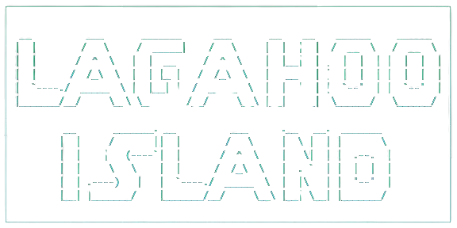
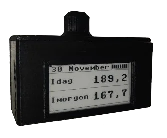

$ website --display hobbies and interests |
|---|
|
Jag har flera intressen och hobbyer. Mina största just nu är programmering, 3D skrivning, CAD och datorer. Jag byggde min första dator i början av 2023, det var lite skakigt, och så kul. 3D skrivaren har jag haft längre, det syns på alla modifieringar och uppgraderingar jag gjort på den. I programmering har jag mängder med projekt, allt från små kul saker till större projekt. |
Utvalda projekt: |
Lagahoo Island

Ett textbaserat äventyrs spel som jag och två klasskompisar har utveklat. Ett projekt vi gör i programmerings kursen som en del av att lära sig Python. |
Current Cost elprisskärm

Det är vad det låter som, en liten dator kopplad till en skärm som visar elpriset. Priset hämtas med an api en gång om dagen och visas sedan på skärmen. Det häftiga med detta projektet är att jag har gjort så mycket själv. Nästan all mjukvara har jag skrivit själv och sedan designat och skrivit ut chassit. Jag gjorde den första versionen innan entreprenörskapet började, men i samband med kursen fick projektet nytt liv och jag gjorde en andra version. |
API verktygDet här var ett av de roligare projekten. Kort sagt så behövde min pappas jobb ett verktyg för att ladda upp filer till en databas med api. Jag tyckte det lät som en fantastisk möjlighet att lära sig mer om Python och api, så jag började direkt. Det var också första gången jag gjorde något med en användargränssnitt. Det slutgiltiga programmet kunde läsa in data från en excel fil, konvertera den till pdf filer, signera filerna och sedan skicka iväg dem. |